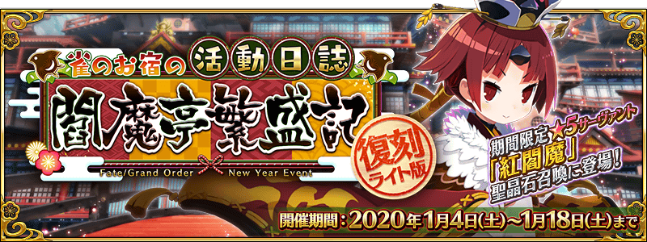
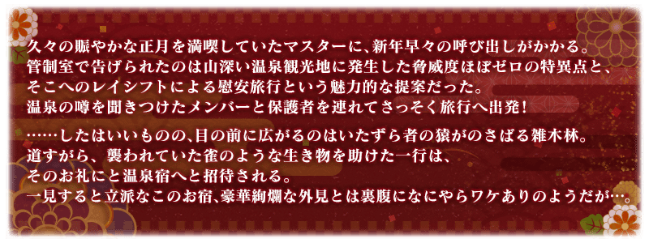
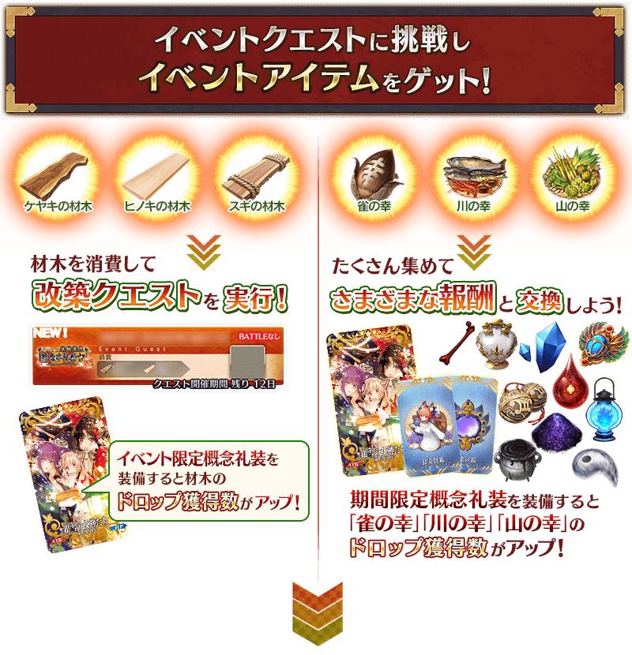
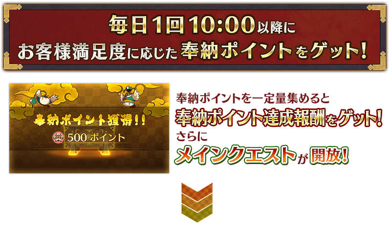
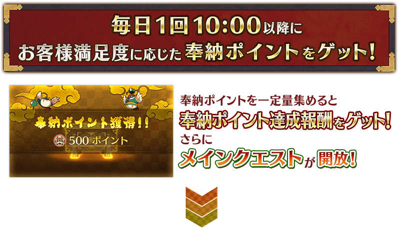
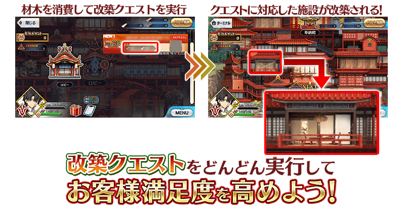
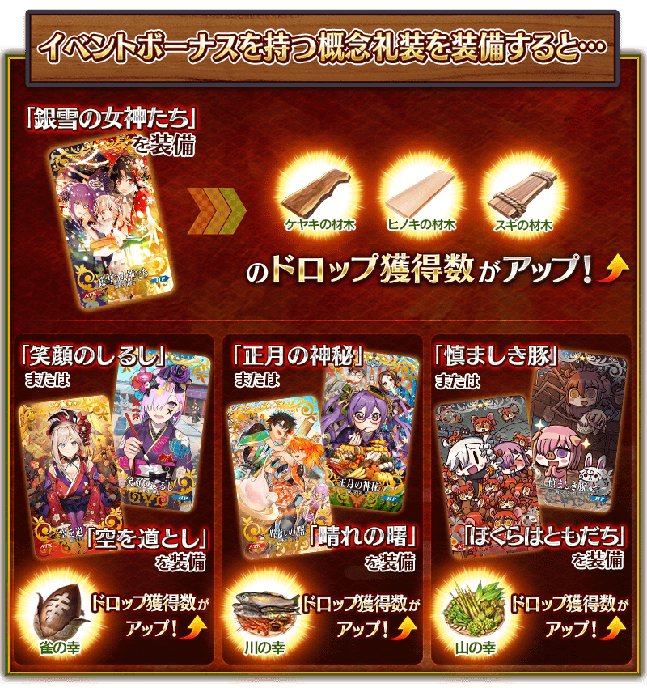

期間限定活動「復刻:雀之旅社活動日誌～閻魔亭繁盛記～ 輕量版」舉辦！
在深山幽谷之中的溫泉旅館掀起的糾紛會是？
與經營旅社的老闆娘・紅閻魔一起讓『閻魔亭』更熱鬧！
本活動中，收集活動道具，用來改建秘境的溫泉旅社『閻魔亭』！
越改建『閻魔亭』的話建築物會越氣派，對應該狀況提升「客人滿足度」。
還有，1天可獲得1次與客人滿足度同値的「奉納點數」，達成對應該總獲得量任務的話會開放故事。
更加改建收集更多奉納點數，觀賞故事的結尾吧！
※本頁面皆為開發中圖片。會有與實際圖片相異的情況。 ※本活動是調整在2019年舉辦的期間限定活動「雀之旅社活動日誌～閻魔亭繁盛記～」更容易遊玩的「復刻輕量版活動」。 ※一部份的關卡為日後開放。
◆活動舉辦期間◆
2020年1月4日(六) 9:00～1月18日(六) 11:59
◆活動參加條件◆
滿足以下條件的御主才能參加
・通過第2部 第3章「Lostbelt No.3 人智統合真國 SIN 紅之月下美人」
※不需要通過亞種特異點(從Ⅰ到Ⅳ)。
◆有關從者真名的注意◆
在2018年12月31日(二) 23:00以後新配信的主線故事及期間限定活動、一部份關卡、宣傳活動及召喚中，會顯示隱藏真名的對象從者真名。
※2018年12月31日(一) 22:59前，已經配信的主線故事、復刻活動、一部份關卡中不在此限。
◆關於在上次舉辦時已獲得報酬的注意◆
在2019年舉辦的期間限定活動「雀之旅社活動日誌～閻魔亭繁盛記～」已獲得特定報酬的情況，會如以下變化。
・在上次舉辦時獲得過「聖杯」的情況，本活動中會以「傳承結晶」代替「聖杯」做為通過報酬。
・在上次舉辦時獲得過「指令紋章」的情況，本活動的活動道具交換中，無法獲得「指令紋章」。


 
※為了通過故事，不需要通過所有的改建關卡。

※為了通過故事，不需要通過所有的改建關卡。

通過主線關卡第三節後，1月5日(日)以後在9:00～隔天8:59之間移動到活動地圖時，可獲得與客人滿足度同值的奉納點數。
本活動中，有著「奉納點數的總獲得量到達一定量」的任務。達成此任務的話可獲得達成報酬，開放下個任務。並且，也會有開放一部份主線關卡的情況。
任務與達成報酬可點擊在管理室(ターミナル)畫面右上的「活動報酬」鍵所顯示的「奉納點數報酬」畫面確認。
可獲得奉納點數在1月5日(日)以後的9:00～隔天8:59之間只限1次，對應客人滿足度每天最多可獲得500,000點。
獲得奉納點數後，隔天9:00前無法再獲得。
另外，可獲得奉納點數只限當天的份，無法一同獲得在前一天以前該入手的份。
請注意活動舉辦期間內奉納點數在未滿足開放主線關卡必要任務的達成值的情況，根據開始活動的時間點，有可能無法通過所有主線關卡。

【開放主線關卡必要的任務】
| 關卡名 | 開放必要的任務 |
|---|---|
| 主線關卡第七節 | 『奉納點數』累計獲得3,500點 |
| 主線關卡第九節 | 『奉納點數』累計獲得90,000點 |
| 主線關卡第十二節 | 『奉納點數』累計獲得500,000點 |
◆有關開放任務及主線關卡的注意◆
※請注意新任務的開放必須領取達成任務的達成報酬。
※主線關卡的開放，除了奉納點數的總獲得量到達一定量以外，會有必須要改建特定設施和達成特定任務及領取任務達成報酬的情況。
本活動中，會發生消耗活動收集道具「櫸木木材」「檜木木材」「杉木木材」來執行的改建關卡。
執行此關卡後會改建閻魔亭的設施，可提升客人滿足度。客人滿足度會影響奉納點數的獲得量，改建越多可獲得更多的奉納點數。
另外，透過進行改建的地點，也會有開放主線關卡。
為了推進故事，也積極地挑戰改建關卡吧！


以通過期間限定活動「復刻:雀之旅社活動日誌～閻魔亭繁盛記～ 輕量版」主線關卡的御主做為對象，開放高難易度的「挑戰關卡」。
「挑戰關卡」就算通過後也不會消失，能無數次挑戰，可以變更從者和概念禮裝的組合後再次挑戰。 ※關卡通過報酬、戰利品、御主EXP、魔術禮裝EXP、絆點數只可在初次通過時獲得。
◆挑戰關卡開放時間◆
2020年1月11日(六) 17:00～(預定)
◆挑戰關卡參加條件◆
滿足以下條件的御主才能參加
・通過期間限定活動「復刻:雀之旅社活動日誌～閻魔亭繁盛記～ 輕量版」的主線關卡
◆挑戰關卡初次通過報酬◆
傳承結晶 1個

做為從復刻輕量版的新要素，追加新的高難易度關卡。
必須通過收集奉納點數開放的主線關卡，並也通過上述「挑戰關卡」。
挑戰在本活動最後等待的新關卡吧！
※本關卡在通過後會消失。
◆關卡開放時間◆
2020年1月11日(六) 17:00～(預定)
◆關卡參加條件◆
滿足以下條件的御主才能參加
・通過期間限定活動「復刻:雀之旅社活動日誌～閻魔亭繁盛記～ 輕量版」的「挑戰關卡」
超值攻略方法・其1
本活動中，所有的從者會得到「櫸木木材」「檜木木材」「杉木木材」的掉落獲得數提升的加成。
提升哪個活動收集道具的掉落獲得數因從者而異，將得到適合目標活動加成獎勵的從者編入隊伍吧！
※請注意各關卡的道具掉落率並非100％。
▶特別活躍的從者
特別活躍的一部份從者除了「櫸木木材」「檜木木材」「杉木木材」所有的掉落獲得數提升外再加上得到活動關卡中的絆點數獲得量提升的加成。
※活動加成的效果量因從者而異。 ※瑪琇・基利艾拉特「絆點數獲得量提升」效果，是所謂「我方全體含候補的絆點數獲得量提升」的效果。支援時此效果無效。
【活動加成的效果量與對象從者】
| 掉落獲得數 | 絆點數 獲得量 |
職階 | 稀有度 | 從者名 |
|---|---|---|---|---|
| 櫸木木材 檜木木材 杉木木材 的所有＋2 |
只限自身 ＋50% |
Saber | ★★★★★ | 紅閻魔 |
| Foreigner | ★★★★★ | 楊貴妃 | ||
| 櫸木木材 檜木木材 杉木木材 的所有＋1 |
只限自身 ＋20% |
Saber | ★★★★ | 迪爾姆德・奧德利暗 |
| Archer | ★★★★ | 巴御前(Archer・地獄) | ||
| Lancer | ★★★★ | 芬恩・麥克庫爾 | ||
| Caster | ★★★★★ | 玉藻前 | ||
| Assassin | ★★★★★ | 李書文 | ||
| Berserker | ★★★★ | 玉藻貓 | ||
| ★★★ | 清姬 | |||
| 我方全體 ＋5% |
Shielder | ★★★ | 瑪琇・基利艾拉特 |
※就算成為對象從者也會有在本活動的主線劇本未登場的情況。
▶其他的從者
上述一部份從者以外，對應職階「櫸木木材」「檜木木材」「杉木木材」任一的掉落獲得數提升。
【活動加成的效果量與對象從者】
| 掉落獲得數 | 職階 | |
|---|---|---|
| 櫸木木材＋1 | Saber Lancer Ruler |
|
| 檜木木材＋1 |
Archer Caster Avenger MoonCancer Foreigner |
|
| 杉木木材＋1 |
Rider Assassin Berserker Alterego |
|
超值攻略方法・其2
裝備活動限定概念禮裝與期間限定概念禮裝來提升活動道具的掉落獲得數！
裝備可在活動道具交換入手的活動限定概念禮裝「銀雪の女神たち」的話，會提升活動道具「櫸木木材」「檜木木材」「杉木木材」各自的掉落獲得數。
另外，裝備在聖晶石召喚Pick Up的期間限定概念禮裝「★5(SSR)笑顔のしるし」「★5(SSR)空道とし」「★4(SR)正月の神秘」「★4(SR)晴れの曙」「★3(R)慎ましき豚」「★3(R)ぼくらはともだち」的話，會提升活動道具「麻雀美食」「河川美食」「山林美食」各自的掉落獲得數。
※請注意各關卡的道具掉落率並非100％。
※期間限定概念禮裝「★5(SSR)空道とし」「★4(SR)晴れの曙」「★3(R)ぼくらはともだち」會在「New Year 2020 Pick Up召喚(每日交替)」被抽出。詳情請在此處確認。
※期間限定概念禮裝「★5(SSR)笑顔のしるし」「★4(SR)正月の神秘」「★3(R)慎ましき豚」會在「復刻 雀之旅社活動日誌Pick Up召喚(每日交替)」被抽出。詳細は此處確認。


活動道具可自點擊管理室(ターミナル)畫面右上「活動報酬」鍵所顯示的「活動道具交換」畫面，交換以下的道具。
※在上次舉辦時獲得過「指令紋章」的情況，本活動的活動道具交換中，無法獲得「指令紋章」。 ※關於英靈結晶・流星之芙芙ALL★4(HP)、英靈結晶・日輪之芙芙ALL★4(ATK)，在通過本活動的主線關卡後才能交換。 ※「櫸木木材」「檜木木材」「杉木木材」在活動期間結束後可交換成QP。 ※活動道具交換期間結束後「麻雀美食」「河川美食」「山林美食」「櫸木木材」「檜木木材」「杉木木材」會消失。
◆交換期間◆
2020年1月4日(六) 9:00～1月25日(六) 11:59
◆能用麻雀美食交換的道具◆
 |
【活動限定概念禮裝】 【活動報酬指令紋章】
【技能強化＆靈基再臨素材】
【靈基再臨素材】
【其他道具】 |
◆能用河川美食交換的道具◆
 |
【活動限定概念禮裝】 【活動報酬指令紋章】
【技能強化＆靈基再臨素材】
【靈基再臨素材】
【其他道具】 |
◆能用山林美食交換的道具◆
 |
【活動限定概念禮裝】
【技能強化＆靈基再臨素材】
【其他道具】 |
◆能用櫸木木材交換的道具◆
 |
【其他道具】 |
◆能用檜木木材交換的道具◆
|
【其他道具】 |
◆能用杉木木材交換的道具◆
 |
【其他道具】 |

|
★★★★★SSR |
◆關於活動報酬指令紋章的ご注意◆
在上次舉辦時獲得過「指令紋章」的情況，本活動的活動道具交換中，無法獲得「指令紋章」。
|
【活動限定】 ※只限在2019年舉辦的期間限定活動「雀之旅社活動日誌～閻魔亭繁盛記～」未獲得情況才能自「活動道具交換」畫面交換。 |

|
★★★★SR ※只限在2019年舉辦的期間限定活動「雀之旅社活動日誌～閻魔亭繁盛記～」未獲得情況才能自「活動道具交換」畫面交換。 |
其他還有，期間限定「復刻 雀之旅社活動日誌Pick Up召喚(每日交替)」同時舉辦！
關於詳情，請自下述橫幅確認。